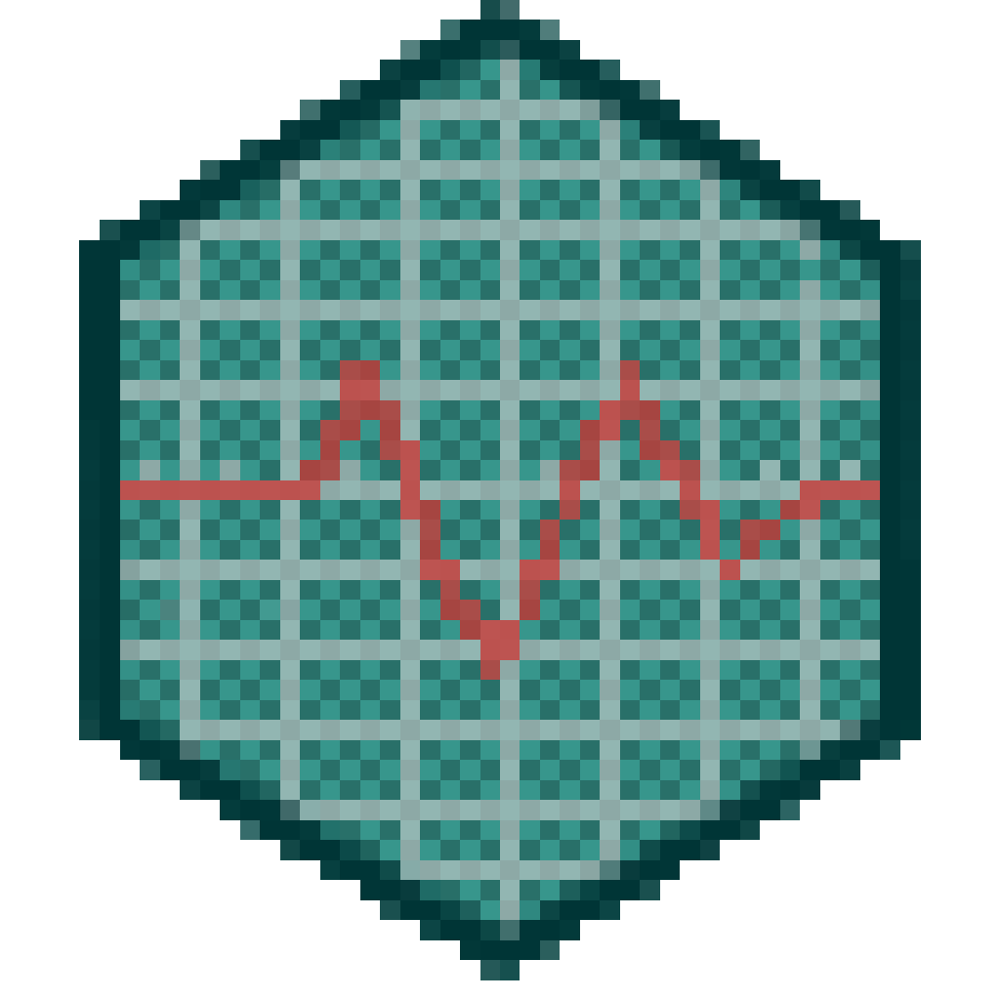

Dystopian Resource Management

Take on the role of an employee on their first day at the Edison Corportation. Assist Arbeau in distributing resources to the four districts to prevent them from falling into unrest. Originally created for Ludum Dare 33's theme of "You are the Monster." Play it here.